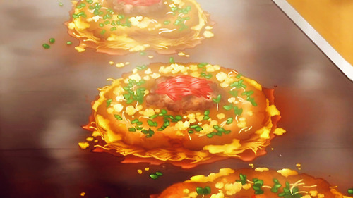

Okonomiyaki Recipe!

Description:
Okonomiyaki is most compared to the Western dishes of pancakes, pizza,
and omelettes. While at first glance it would seem that these dishes have
almost nothing in common with each other, I have a feeling the comparison
stems from the freedom of being able to be creative with the toppings
and ingredients of these dishes. In fact, Okonomiyaki is a combination of
the words Okonomi, meaning what you like or what you want, and yaki
meaning grilled or cooked.
Okonomiyaki is generally easy to make, though it requires a fair bit of prep-work
before it’s ready to cook. Many items must be chopped and at the ready because
once all the ingredients are prepared, it can be quickly thrown together. Fluffy
and smothered in salty tonkatsu sauce and creamy Japanese mayonaise,
with bursts of picked ginger and seafood within, it’s no wonder that this dish
is referred to as Osaka soul food….
The Recipe:
Okonomiyaki
Makes 3 medium or 2 large okonomiyaki (2 plus servings).
Ingredients:
- 4 ounces grated nagaimo
- 5 tbsp dashi stock, or water with a pinch of dashi powder
- ½ cup all purpose flour
- 3 large eggs
- 3 tbsp beni shouga
- 2 cups packed cabbage, roughly and thinly chopped
- 12 medium shrimp, halved horizontally and lengthwise
- 3 tbsp chopped green onion
- Oil for cooking
- Toppings: kizami nori, aonori, katsuobushi, tonkatsu sauce,
and Japanese mayonnaise
Directions:
- Peel and grate the nagaimo, avoiding contact with raw surface if allergic.
Mix with the dashi and flour, and add two of the eggs. It should be a rather
loose batter. (Optional: fry up some tenkatsu with a small portion of the batter.)
- Add the chopped cabbage to the batter. Add the other egg. Stir with a big
spoon or a spatula to combine. Add the beni shouga, shrimp and green onion.
- Place oil in large frying pan over medium-low heat. Take a wad of cotton wool
or paper towels, and spread around a thin layer of oil.
- Spread ½ to ⅓ of the batter in a circle on the pan. Put on a lid and let it
steam-cook for about 5 to 6 minutes.
- Take two spatulas and flip the okonomiyaki over carefully. Continue cooking
without a lid for about 3 to 4 minutes. Lower the heat if it’s cooking too fast,
or turn it up a bit if it isn’t. The inside should be just cooked through, not doughy
or runny. Try to resist the urge to press down on the okonomiyaki at this point-doing
so will squeeze some air and fluffiness out of the okonomiyaki.
- Remove from frying pan and serve on a large plate. Brush with okonomiyaki
or tonkatsu sauce and drizzle with Japanese mayonnaise. Sprinkle on katsuobushi
and kizami nori liberally. Eat while piping hot.